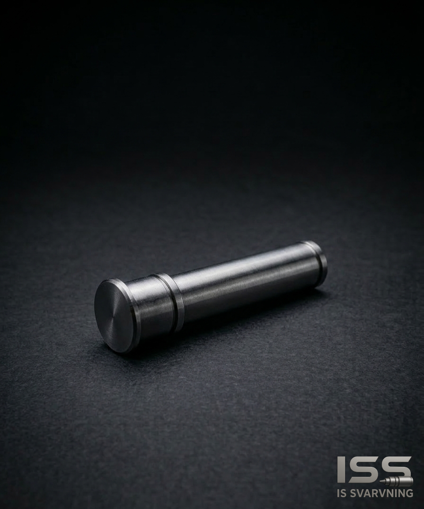
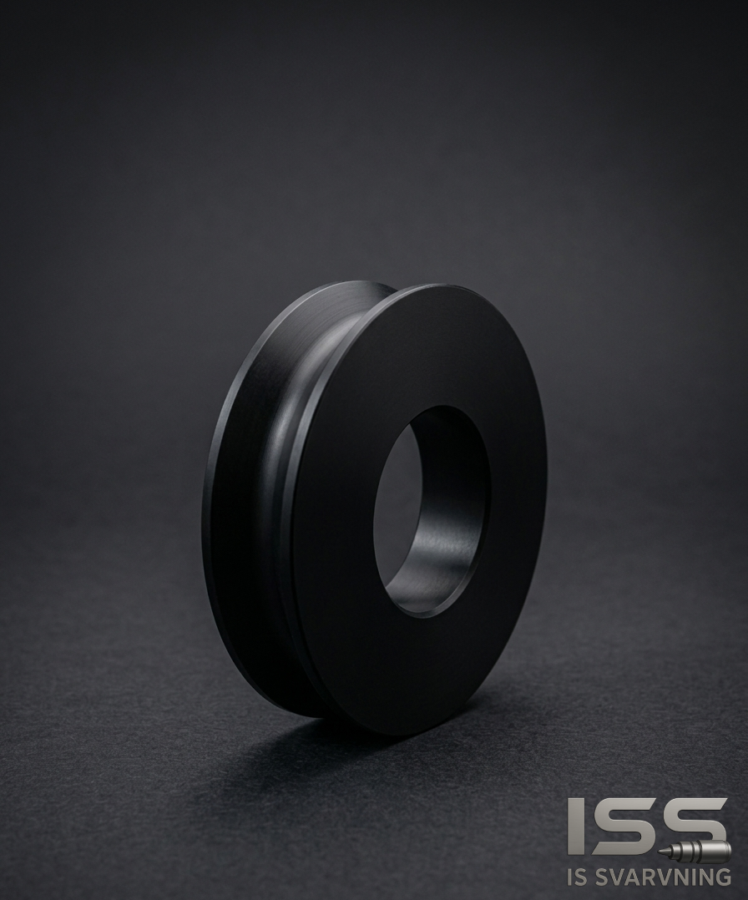

Om ossAbout us
Er partner för precisionsbearbetningYour partner for precision machining
Vi lägger stor vikt vid att förstå varje uppdrag och leverera lösningar som är anpassade efter verkliga behov – oavsett om det gäller enstaka detaljer eller återkommande produktion.We place great importance on understanding each assignment and delivering solutions tailored to real needs—whether it involves individual details or ongoing production.
Med fokus på kvalitet, flexibilitet och pålitlighet strävar vi efter långsiktiga samarbeten där du som kund kan känna dig trygg genom hela processen.With a focus on quality, flexibility, and reliability, we strive to build long-term partnerships where you, as our client, can feel confident and supported throughout the entire process.
Kontakta ossContact us

Precision i praktikenPrecision in practice
Vi tar ansvar genom hela processen: från ritning och materialval till slutlig leverans. Med tydliga kvalitetskontroller och en effektiv produktion säkerställer vi att din beställning når rätt toleranser och leveranstid.We take full responsibility throughout the entire process—from drawings and material selection to final delivery. Through clear quality controls and efficient production, we ensure your order meets the required tolerances and delivery timelines.
Vår erfarenhet gör oss till en pålitlig partner vid både prototyptillverkning och serier.Our experience makes us a reliable partner for both prototyping and series production.
- Erfarenhet: 20+ år i branschenExperience: 20+ years in the industry
- Maskinpark: CNC-svarvning, fräsning och mätningMachine park: CNC turning, milling and measurement
- KvalitetskontrollQuality control